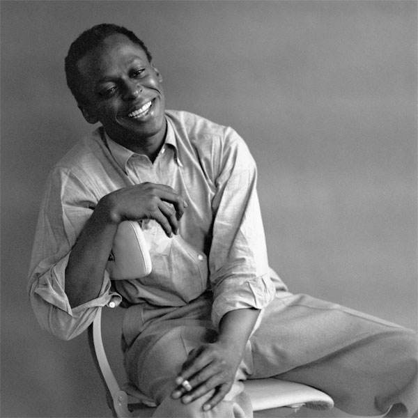
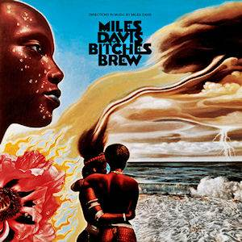
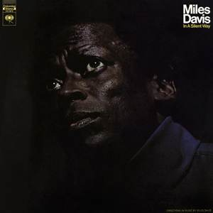

Blue Note Revival Night
Date: October 12, 2026
Venue: Kimmel Cultural Campus
Address: 300 S Broad St, Philadelphia, PA
An intimate evening focused on the modal magic of Kind of Blue.
Trumpeter. Innovator. Architect of modern jazz.

Miles Dewey Davis III (1926-1991) transformed jazz across multiple eras, from bebop and cool jazz to modal and electric fusion. Born in Alton, Illinois, and raised in East St. Louis, he moved to New York in the 1940s and studied at Juilliard while learning directly from pioneers in the bebop scene.
His landmark recordings, including Birth of the Cool, Kind of Blue, and Bitches Brew, redefined what jazz could sound like. Davis was known for assembling visionary bands and mentoring artists who later became icons themselves.
Date: October 12, 2026
Venue: Kimmel Cultural Campus
Address: 300 S Broad St, Philadelphia, PA
An intimate evening focused on the modal magic of Kind of Blue.
Date: November 7, 2026
Venue: The Fillmore Philadelphia
Address: 29 E Allen St, Philadelphia, PA
A high-energy set revisiting the bold sonic world of Davis' fusion years.
Date: December 3, 2026
Venue: World Cafe Live
Address: 3025 Walnut St, Philadelphia, PA
A late-night program of classics and improvisations inspired by Miles' small-group era.
Davis continuously reinvented his sound over five decades, shaping multiple jazz movements and launching the careers of many legendary musicians.
A defining modal jazz album and one of the most influential recordings ever released.

The groundbreaking record that launched jazz fusion into the mainstream.

A meditative, atmospheric bridge between acoustic jazz and electric experimentation.